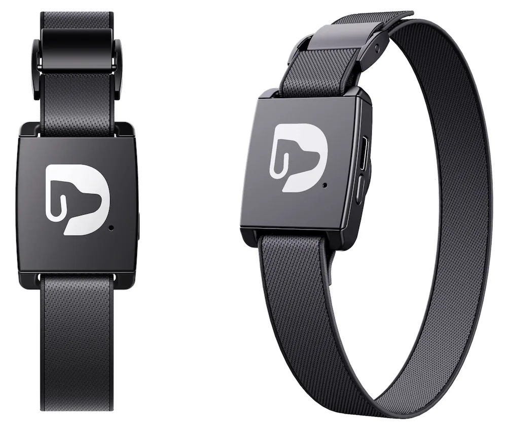
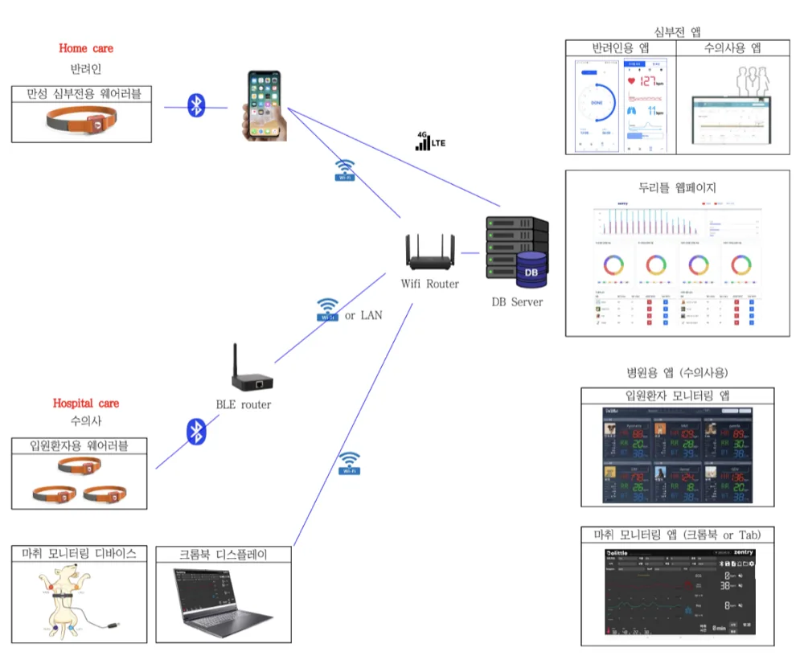
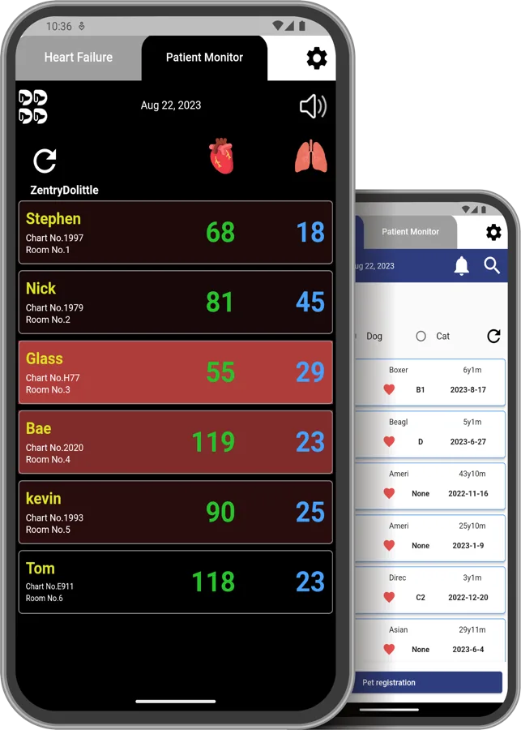
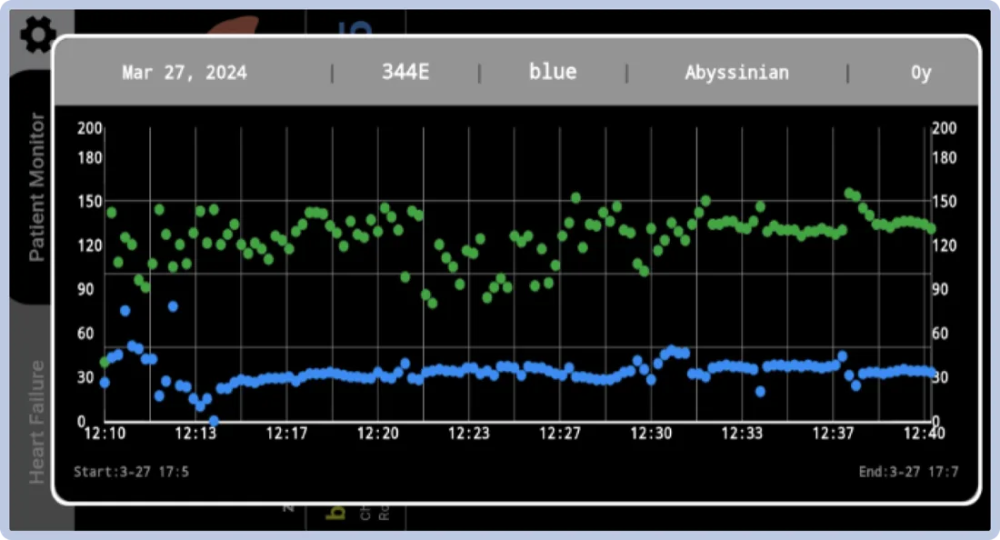
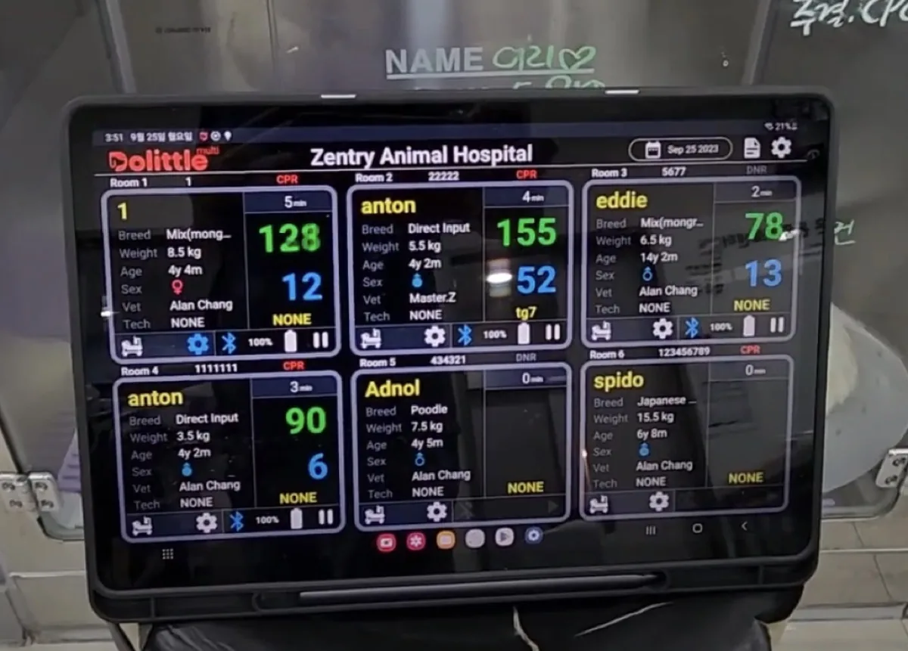
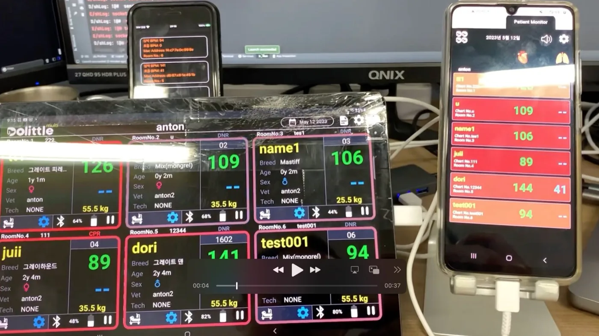
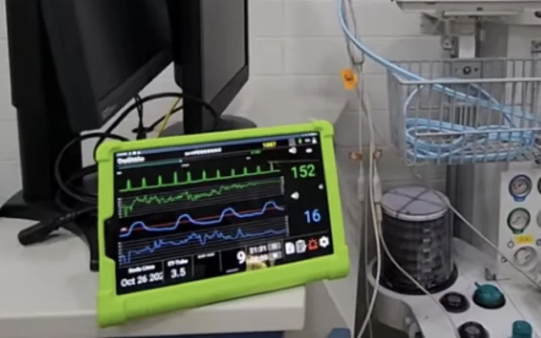
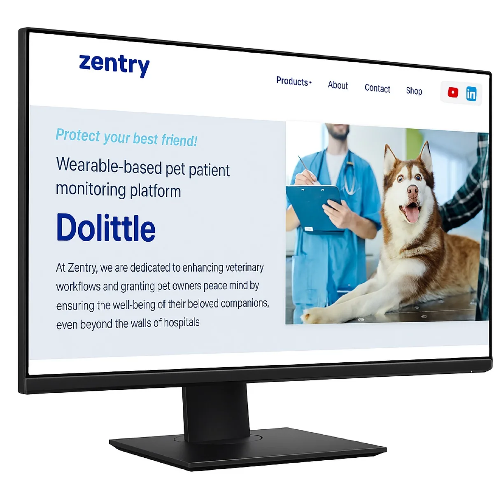
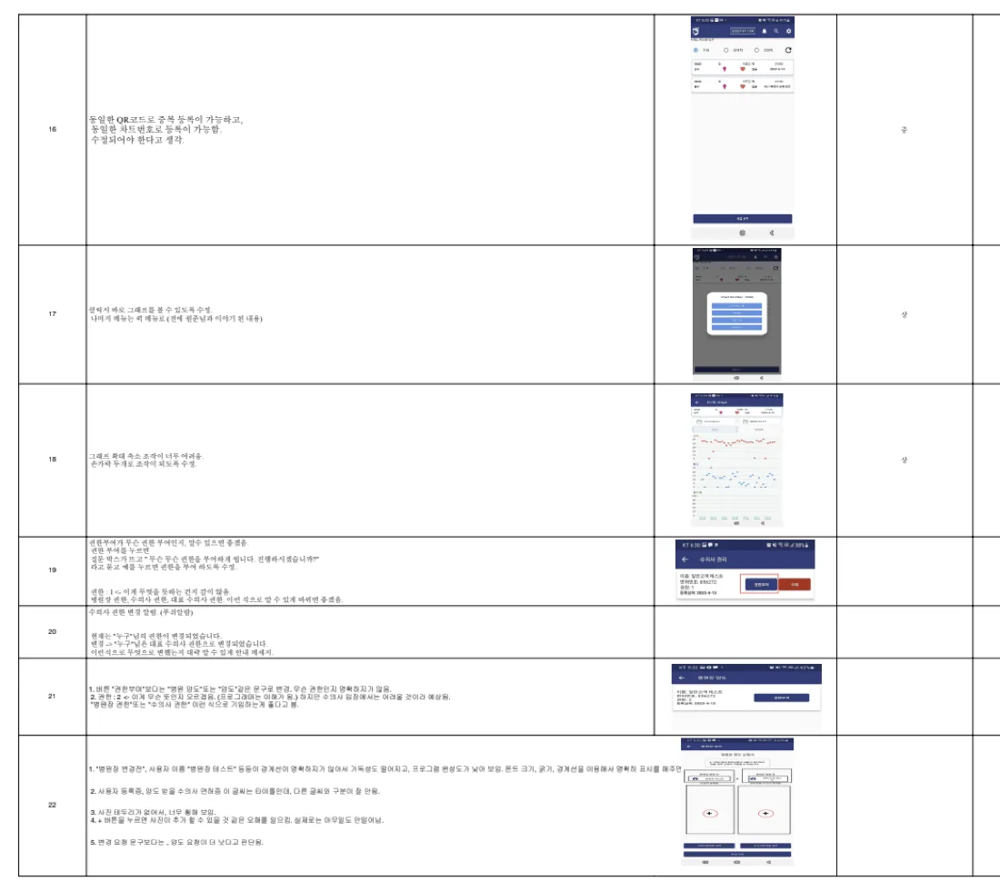

반려동물이 착용한 웨어러블 밴드가 심박수와 호흡수를 읽어 블루투스로 보내고, 그 값이 앱과 병원 화면에 실시간으로 나타납니다.
제가 맡은 일은 이 숫자를 사람이 판단할 수 있는 화면으로 만드는 것이었습니다. 같은 심박수라도 집에서 보호자가 보는 화면과 수술실에서 수의사가 보는 화면은 달라야 합니다.

심부전 등 만성 질환이 있는 반려동물의 심박·호흡을 실시간으로 보는 헬스케어 플랫폼입니다. 가정용 앱부터 수술실 마취 모니터링 화면까지, 2년 6개월간 앱과 웹을 함께 맡았습니다.

(주)젠트리는 심부전 등 만성 질환이 있는 반려동물을 위한 헬스케어 서비스를 만듭니다. 가정용 기기부터 수의사용 마취 모니터링 장비까지, 심박과 호흡을 실시간으로 확인하는 ‘두리틀’ 시리즈가 대표 제품입니다.
반려동물이 착용한 웨어러블 밴드가 심박수와 호흡수를 읽어 블루투스로 보내고, 그 값이 앱과 병원 화면에 실시간으로 나타납니다.
제가 맡은 일은 이 숫자를 사람이 판단할 수 있는 화면으로 만드는 것이었습니다. 같은 심박수라도 집에서 보호자가 보는 화면과 수술실에서 수의사가 보는 화면은 달라야 합니다.

두리틀은 앱 하나가 아니라 쓰는 장소에 따라 갈라지는 여러 화면의 묶음입니다. 화면을 정하기 전에 데이터가 어디서 와서 어디로 가는지부터 그렸습니다.

화면을 나눈 기준은 보는 사람이 그 순간 무엇을 결정해야 하는가였습니다. 보호자는 “며칠간의 흐름이 괜찮은가”를, 마취실 수의사는 “지금 이 숫자가 위험한가”를 봅니다. 그래서 전자는 그래프, 후자는 큰 숫자와 색으로 만들었습니다.
두리틀 벳은 병원에 등록된 반려동물의 심박수와 호흡수를 수의사가 실시간으로 확인하는 앱입니다. 수술 중에는 두리틀 멀티로 생체 데이터를 연동해 볼 수 있습니다. 저는 초기 화면 구성과 기획 단계부터 참여했습니다.

목록은 찾는 화면이라 흰 배경에 정보를 촘촘히, 모니터는 지켜보는 화면이라 검은 배경에 숫자만 크게 남겼습니다. 어두운 수술실·입원실에서 멀리서도 읽히고, 값이 범위를 벗어나면 카드 전체가 붉게 바뀝니다. 연결이 끊겨 값이 없을 때는 0이 아니라 --로 표시해 측정값 0과 미수신을 구분했습니다.
두리틀 싱글·마취 화면에서는 TCP 소켓으로 받은 바이트 데이터를 16진수로 변환해 실시간으로 화면에 표시하는 기능을 구현했습니다. 측정 기기의 원본 바이트 스트림을 화면에 쓰는 값으로 바꾸는 구간입니다.




화면이 놓이는 자리를 보고 바꾼 것이 있습니다. 태블릿이 벽에 붙거나 장비 사이에 끼워져 있어 서 있는 거리에서 읽히는 크기가 필요했고, 장갑을 낀 손으로도 누를 수 있게 터치 영역을 넉넉히 잡았습니다.
보호자용 화면의 주된 쓰임은 지금 값이 위험한지 판단하는 게 아니라 기간을 정해 흐름을 보는 것입니다. 그래서 상단에 날짜 범위 선택을 두고, 심박수와 호흡수를 같은 시간축에 색만 달리해 겹쳤습니다.
공식 웹사이트는 이미 운영 중이었지만 구조에 문제가 있었습니다. 업데이트 기획에 참여한 뒤, 문제를 정리하고 다시 만드는 일을 맡았습니다.
결과물은 데스크톱과 모바일에서 같은 내용을 각 폭에 맞게 보여줍니다. 제품 소개는 수의사 / 보호자 / 반려동물 세 갈래로 나눠, 방문한 사람이 자기 줄을 먼저 찾을 수 있게 했습니다.


개발 중에 팀원들이 기능별 개선사항과 사용자 피드백을 문서로 공유해 줬고, 이를 근거로 UI/UX, 동작 흐름, 예외 처리를 보완했습니다.
문서에는 “같은 QR코드로 중복 등록이 되고 같은 차트번호도 등록된다”처럼 정상 흐름에서는 드러나지 않는 문제가 많았습니다. 병원에서는 이런 중복이 오진으로 이어질 수 있어 예외 처리 항목을 따로 추적했습니다.

앱은 iOS와 안드로이드를 함께 내야 해서 Flutter를, 측정 기기와의 실시간 통신에는 TCP 소켓과 WebSocket을 썼습니다. 공식 웹사이트는 컴포넌트 구조로 유지보수를 개선하려고 React를 골랐습니다.
두리틀은 화면이 틀리면 사람이 잘못 판단하는 서비스였습니다. 수술실에서 값을 잘못 읽거나 미수신을 0으로 오해하거나 같은 환자가 두 번 등록되면, UI 문제로 끝나지 않습니다.
그래서 배운 것은 대부분 정상 흐름 밖에서 나왔습니다. 데이터가 안 올 때, 배터리가 없을 때, 같은 값이 두 번 들어올 때 화면이 무엇을 말해야 하는지를 하나씩 채운 2년 6개월이었습니다.